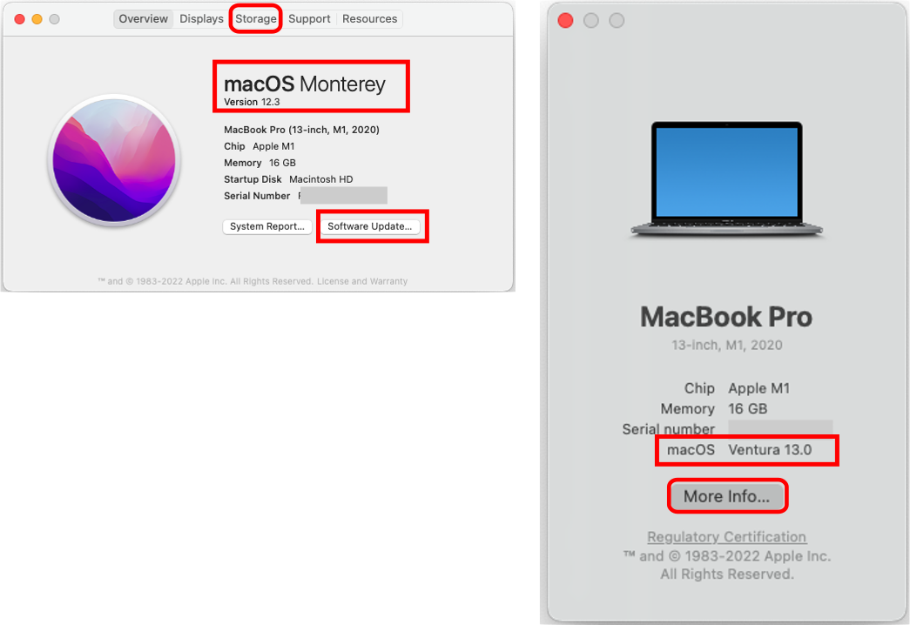

Compatible Computer
Compatible Computer¶
Time Estimate
If you are building with a Mac and Xcode:
- 5 minutes, if you have a Mac with Ventura (macOS 13.x) or higher
- 30-60 minutes, if you need to install macOS updates
Hint: OS stands for Operating System
New Method (Loop 3):
If you do not have a Mac, you can build Loop 3 with any computer using a browser. If you want to use that method, review this list and head over to Browser Build.
- You need a paid ($99/year) Apple Developer Account
- You need an account (free) with github
- You need a compatible phone to install the app from TestFlight
- You need a compatible Pump and CGM if you want to actually Loop (and not just explore the app)
Summary
Your computer, iPhone and Xcode must have compatible versions to build Loop with the Mac-Xcode method.
- A summary list of Compatible Versions is found on this page with more detail in a later page
If you are buying a Mac specifically to use the Mac-Xcode build method, chose one with Ventura operating system and at least 256 GB (512 GB is better). The Browser Build method does not have the same requirements.
FAQs
- "Do I need a Mac or Virtual Machine?." Not any more! You can build Loop 3 with any browser on any computer.
- "I want to use the Mac-Xcode build method. Can I use a PC or Windows computer? I don't own an Apple computer." Yes, you can. Please read this FAQ about using a Virtual Machine.
- "How often do I need to use the computer if I choose the Mac-Xcode build method?" Computer access is required when
- Initially installing the Loop app
- Loop app expires (Annually for a paid account or weekly for a free account)
- Updating to a newer Loop release
- You do NOT need access to an Apple computer to update your phone iOS, troubleshoot or change Loop settings
If you have access to a computer with MacOS 13.0 or newer, you can skip ahead to Check Space Available.
Compatible Versions¶
With the release of Loop 3:
- Mac operating system of Ventura, macOS 13.x must be used if running on a phone with iOS 16.4 or newer
- Minimum Mac operating system is Monterey, macOS 12.5 or higher for phones running iOS 15.x or 16.3.1 or older
The Loop and Learn Version Updates page posts an update every time a new iOS is released and tested. That page is typically updated faster than LoopDocs and reports changes, if any, to the minimum Xcode or macOS.
- iOS 16.4 or newer, the minimum macOS is Ventura (13.0)
- iOS 15.x or 16.3.1 or older, the minimum macOS is Monterey (12.5)
- Loop 3, the minimum macOS is Monterey (12.5)
If your macOS does not meet the minimum, check to see if you can update your macOS or consider using the Browser Build method, which works on any computer.
iOS Dictates Your Computer Needs
The more up-to-date you keep your phone iOS, the more up-to-date your computer and macOS needs to be to build Loop with the Mac-Xcode build method. A new build is required at least once a year. More information on iOS is in Download Xcode.
Do not use any of the beta macOS versions. (If you don't know what that means, you aren't using one.)
Check Your macOS Version¶
To find your macOS version, click on the Apple icon in the computer's upper left corner and select About this Mac. The graphic below highlights the macOS version with a red rectangle. Your computer can be a MacBook, iMac, macMini, etc. It will work to build Loop if it has the minimum required macOS version and enough storage.
With the Ventura macOS version, the About this Mac display changed. The left side of the graphic shows Monterey (or earlier) and the right side shows Ventura. Both styles of display indicate the macOS on this screen (red rectangle). For Ventura, when you tap on the More Info icon, it opens the General -> About screen from the System Settings menu. This is very similar to the phone Settings -> General -> About screen.

If you do not have the required minimum macOS version
- For macOS 12.6.1 or earlier, check the
Software Updatebutton on the screen shown above - For macOS 13.0 or later, click on the Apple and choose
System Settings- Select
GeneralandSoftware Update, just like you would on the phone interface
- Select
Apple says upgrading to macOS Monterey or Ventura requires 26 GB of available storage.
Check the Space Available¶
You need to have 50 GB free space in order to install Xcode in Download Xcode. At the top of the menu on the graphic above, click on the Storage Tab highlighted with a red rectangle, or, if running Ventura, tap on More Info to open the About screen (under System Settings->General), which includes storage at the bottom of the display.
To free up space, move things like photos to an external drive. The Xcode application cannot be run from an external drive.
If you are evaluating a used computer, it's best to have at least 256 GB total disk space (more is better).
Which Macs Are Compatible with macOS Ventura?¶
Ventura is required for building Loop on a phone running iOS 16.4 or higher with the Mac-Xcode method. You can install Ventura on the following:
- MacBook Pro introduced in 2017 or later
- MacBook Air introduced in 2018 or later
- MacBook introduced in 2017 or later
- Mac mini introduced in 2018 or later
- iMac introduced in late 2017 or later
- iMac Pro
- Mac Studio
- Mac Pro introduced in 2019 or later
- get the full list from Apple for Ventura
Which Macs Are Compatible with macOS Monterey?¶
Monterey can be used for building Loop with the Mac-Xcode method when building to a phone at iOS 16.3.1 or older. You can install Monterey on the following:
- MacBook Pro, early 2015 or newer
- MacBook Air, early 2015 or newer
- MacBook, early 2016 or newer
- Mac Mini, late 2014 or newer
- iMac, 2015 or newer
- iMac Pro, 2017 or newer
- Mac Pro, late 2013 or newer
- get the full list from Apple for Monterey
Older Macs¶
Several experienced Loopers have reported success using OpenCore-Legacy-Patcher to enable older Macs computers to use new versions of the operating system. Use this link at your own risk. This is not suggested for novice Mac users.
Or - look into building with GitHub Actions - no Mac computer required, no need to worry about versions for Mac OS or Xcode - all done for you on GitHub (some configuration required).
Next Step:¶
If you already have an Apple Developer ID or you are using a free ID, next step is Download Xcode.
Free ID
The free ID method only works when using the Mac-Xcode build method. The Browser Build method requires a paid developer ID ($99/year) but does not require a Mac computer.